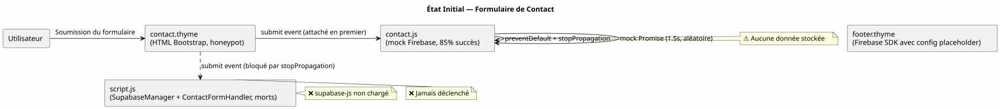
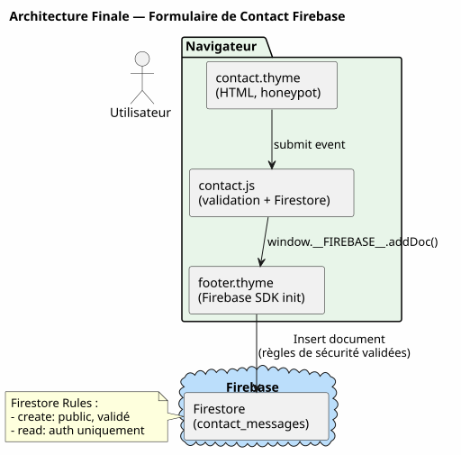

Migration Supabase → Firebase : Brancher un Formulaire de Contact sur Firestore Sans Backend
Publié le 29 April 2026
- 1. La scène : un formulaire qui ne stocke rien
- 2. Pourquoi Firebase plutôt que Supabase ?
- 3. Phase 1 : Créer le projet Firebase
- 4. Phase 2 : Réécrire le JavaScript de soumission
- 5. Phase 3 : Nettoyer le code mort Supabase
- 6. Phase 4 : Configurer le footer
- 7. Phase 5 : Architecture finale
- 8. Ce que cette migration dit du dogfooding
- 9. Prochaines étapes (backlog)
- 10. Références
Pendant des mois, le formulaire de contact de ce site a tourné sur un mock JavaScript — une promesse à 85 % de succès, un faux Firestore, zéro données stockées. Le plan initial prévoyait un backend Supabase avec Google Apps Script pour les notifications mail. Abandonné. Aujourd’hui, je raconte la migration vers Firebase Firestore : création du projet, règles de sécurité, réécriture du JS, nettoyage du code mort Supabase. Et pourquoi ce choix dit quelque chose de plus large sur la philosophie de développement.
1. La scène : un formulaire qui ne stocke rien
Ce site est généré par JBake, mon plugin Gradle bakery. Il est 100 % statique — pas de backend, pas de base de données. Sauf que j’ai un formulaire de contact. La page contact.html existe, le HTML est prêt (champs nom, email, téléphone, sujet, message, validation HTML5, honeypot anti-spam), les styles Bootstrap sont en place. Visuellement, tout est parfait.
Sauf qu’à la soumission, rien ne se passe.
const firebaseMock = new Promise((resolve, reject) => {
setTimeout(() => {
if (Math.random() < 0.85) {
resolve({ status: 201, message: 'Message stored in Firestore.' });
} else {
reject({ status: 500, message: 'Firestore write failed.' });
}
}, 1500);
});Un mock. Une promesse qui fait semblant. L’utilisateur voit un spinner, puis un message « Message envoyé avec succès ! ». Mais les données partent dans le vide. Aucun message n’est stocké nulle part.
La situation est pire qu’un formulaire cassé — c’est un formulaire qui ment.
1.1. L’héritage Supabase
Le plan initial, documenté dans content/draft/integration_formulaire_contact_supabase.adoc, prévoyait :
-
Une base Supabase avec table
contactset Row Level Security -
Une RPC
handle_contact_formcôté serveur -
Un trigger SQL appelant un webhook Google Apps Script
-
Google Apps Script qui envoie un mail Gmail de notification
Le code JavaScript correspondant existe encore dans script.js. Il y a une classe SupabaseManager qui initialise un client Supabase avec des variables globales SUPABASE_URL et SUPABASE_KEY, et une classe ContactFormHandler qui écoute l’événement submit du formulaire et appelle SupabaseManager.submitContactForm().
Problème : ces variables globales ne sont plus injectées dans le footer. Le <script src="supabase-js"> a été retiré. Le code appelle supabase.createClient() sur une variable supabase qui n’existe plus. Donc :
console.error : 'Supabase client library (supabase-js) is not loaded.'Non seulement les données ne sont pas stockées, mais le code de soumission est mort.
1.2. La double soumission fantôme
Pour empirer les choses, il y a une concurrence silencieuse entre deux handlers sur le même formulaire :
-
contact.jsécoute le submit, appelle le mock Firebase -
script.js— viaContactFormHandler— écoute aussi le submit, appelleSupabaseManager
Les deux font event.preventDefault() + event.stopPropagation(). Comme contact.js est chargé en premier dans footer.thyme, son handler est attaché en premier. Il bloque la propagation. ContactFormHandler ne sera jamais déclenché.
Ce n’est même pas un bug actif — c’est un zombie. Du code qui n’a jamais l’occasion de s’exécuter.

2. Pourquoi Firebase plutôt que Supabase ?
La décision de migration est documentée dans AGENT.adoc :
Firebase est désormais choisi pour les raisons suivantes : meilleur plan gratuit, Firestore natif, Cloud Functions intégrées, écosystème Google plus adapté. L’implémentation Supabase existante est marquée « ⚠️ Abandonné ».
Au-delà du plan gratuit, il y a une raison architecturale. Ce site vit dans l’écosystème Google : le dépôt cible est cheroliv.github.io, le CNAME pointe sur GitHub Pages, le build Gradle push sur GitHub via JGit. Ajouter un service Google (Firebase) plutôt qu’un service tiers (Supabase) réduit la surface de dispersion.
Firestore en mode natif (pas en mode Datastore) est aussi plus proche du modèle mental NoSQL document que j’ai en tête : collections, documents, champs typés, timestamps serveur, règles de sécurité intégrées.
3. Phase 1 : Créer le projet Firebase
3.1. Initialisation
La CLI Firebase n’étant pas installée sur ma machine, je passe par la console web :
-
Aller sur Firebase Console
-
Créer un projet
cheroliv-contact(ou réutiliser un projet existant) -
Activer Firestore en mode natif (pas Datastore)
-
Créer une base de données en région
eur3(Europe)
Pour un usage minimaliste comme le nôtre (une seule collection, écriture publique), le mode natif est le bon choix. Pas besoin de règles Datastore complexes.
3.2. Règles de sécurité Firestore
Le formulaire est public — n’importe qui peut envoyer un message. Mais je veux limiter les abus :
rules_version = '2';
service cloud.firestore {
match /databases/{database}/documents {
match /contact_messages/{messageId} {
// Lecture : admin uniquement (authentifié)
allow read: if request.auth != null;
// Écriture : publique, mais limitée
allow create: if request.auth == null
&& request.resource.data.name is string
&& request.resource.data.name.size() >= 1
&& request.resource.data.name.size() <= 100
&& request.resource.data.email is string
&& request.resource.data.email.matches('.*@.*\\..*')
&& request.resource.data.email.size() <= 254
&& request.resource.data.subject is string
&& request.resource.data.subject.size() >= 3
&& request.resource.data.subject.size() <= 200
&& request.resource.data.message is string
&& request.resource.data.message.size() >= 10
&& request.resource.data.message.size() <= 5000
&& request.resource.data.created_at == request.time
&& request.resource.data.user_agent is string
&& request.resource.data.user_agent.size() <= 500;
}
}
}Points clés :
-
allow read— seuls les utilisateurs authentifiés peuvent lire les messages (moi, via la console Firebase) -
allow create— n’importe qui peut créer un document, mais avec validation des champs -
Validation côté serveur : tailles min/max, format email,
created_atdoit correspondre àrequest.time(anti-falsification) -
user_agentest envoyé pour traçabilité (pas critique mais utile)
Ces règles sont plus strictes qu’un simple allow write: if true;. Elles empêchent un attaquant d’injecter des payloads énormes ou des champs mal formés.
4. Phase 2 : Réécrire le JavaScript de soumission
Le contrat est simple :
-
Lire les données du formulaire
-
Vérifier le honeypot (champ
hp_name— s’il est rempli, c’est un bot, on simule un succès sans rien envoyer) -
Appeler
addDoc(window.FIREBASE.collection(db, "contact_messages"), {…}) -
Afficher succès ou erreur
4.1. La dépendance window.FIREBASE
Dans footer.thyme, un script module initialise Firebase SDK et expose un objet global :
<script type="module">
import { initializeApp } from "https://www.gstatic.com/firebasejs/11.6.0/firebase-app.js";
import { getFirestore, collection, addDoc, serverTimestamp }
from "https://www.gstatic.com/firebasejs/11.6.0/firebase-firestore.js";
const firebaseConfig = { /* valeurs réelles */ };
const app = initializeApp(firebaseConfig);
const db = getFirestore(app);
window.__FIREBASE__ = { db, collection, addDoc, serverTimestamp };
</script>Les scripts module s’exécutent avant DOMContentLoaded, donc window.FIREBASE est garanti disponible quand le handler contact.js se déclenche. Par précaution, j’ajoute quand même un polling de 5 secondes au cas où le CDN serait lent.
4.2. Le nouveau contact.js
document.addEventListener('DOMContentLoaded', function () {
'use strict';
const form = document.getElementById('contact-form');
if (!form) return;
const submitButton = form.querySelector('button[type="submit"]');
const successMessage = document.getElementById('contact-success-message');
const errorMessage = document.getElementById('contact-error-message');
// Éléments de validation
const nameInput = form.querySelector('input[name="name"]');
const emailInput = form.querySelector('input[name="email"]');
const phoneInput = form.querySelector('input[name="phone"]');
const subjectInput = form.querySelector('input[name="subject"]');
const messageInput = form.querySelector('textarea[name="message"]');
const honeypotInput = form.querySelector('input[name="hp_name"]');
/**
* Attend que window.__FIREBASE__ soit disponible.
* Timeout de 5 secondes — si le CDN Firebase est lent, on abandonne.
*/
function waitForFirebase(timeoutMs = 5000) {
return new Promise((resolve, reject) => {
if (window.__FIREBASE__) {
resolve(window.__FIREBASE__);
return;
}
const start = Date.now();
const interval = setInterval(() => {
if (window.__FIREBASE__) {
clearInterval(interval);
resolve(window.__FIREBASE__);
} else if (Date.now() - start > timeoutMs) {
clearInterval(interval);
reject(new Error('Firebase SDK non disponible après timeout'));
}
}, 100);
});
}
// --- Validation (identique à l'existant) ---
function validateForm() {
nameInput.setCustomValidity('');
emailInput.setCustomValidity('');
if (phoneInput) phoneInput.setCustomValidity('');
subjectInput.setCustomValidity('');
messageInput.setCustomValidity('');
if (nameInput.value.trim().length < 1) {
nameInput.setCustomValidity('Veuillez saisir votre nom.');
}
const emailPattern = /^[^\s@]+@[^\s@]+\.[^\s@]+$/;
if (!emailPattern.test(emailInput.value.trim())) {
emailInput.setCustomValidity('Veuillez saisir une adresse email valide.');
}
if (phoneInput && phoneInput.value.trim() !== '') {
const phonePattern = /^\d{10,15}$/;
if (!phonePattern.test(phoneInput.value.trim())) {
phoneInput.setCustomValidity('Veuillez saisir un numéro valide (10 à 15 chiffres).');
}
}
if (subjectInput.value.trim().length < 3) {
subjectInput.setCustomValidity('Veuillez saisir un sujet (3 caractères minimum).');
}
if (messageInput.value.trim().length < 10) {
messageInput.setCustomValidity('Veuillez saisir un message (10 caractères minimum).');
}
form.classList.add('was-validated');
return form.checkValidity();
}
// --- Handler de soumission ---
form.addEventListener('submit', async function (event) {
event.preventDefault();
event.stopPropagation();
if (!validateForm()) return;
// Honeypot : si rempli, simuler un succès sans rien envoyer
if (honeypotInput && honeypotInput.value.trim() !== '') {
successMessage.style.display = 'block';
form.reset();
form.classList.remove('was-validated');
return;
}
// UI : état d'envoi
submitButton.disabled = true;
submitButton.innerHTML = `
<span class="spinner-border spinner-border-sm" role="status" aria-hidden="true"></span>
Envoi en cours...
`;
successMessage.style.display = 'none';
errorMessage.style.display = 'none';
try {
const fb = await waitForFirebase();
const messagesCollection = fb.collection(fb.db, 'contact_messages');
await fb.addDoc(messagesCollection, {
name: nameInput.value.trim(),
email: emailInput.value.trim(),
phone: phoneInput ? phoneInput.value.trim() : '',
subject: subjectInput.value.trim(),
message: messageInput.value.trim(),
created_at: fb.serverTimestamp(),
user_agent: navigator.userAgent.substring(0, 500)
});
successMessage.style.display = 'block';
form.reset();
form.classList.remove('was-validated');
} catch (error) {
console.error('Erreur Firestore:', error);
errorMessage.style.display = 'block';
} finally {
submitButton.disabled = false;
submitButton.innerHTML = `
<i class="bi bi-send me-2"></i>
Envoyer le Message
`;
}
}, false);
});Les changements par rapport au mock :
-
waitForFirebase()— polling avec timeout, robuste même si le CDN est lent -
honeypot— si le champ cachéhp_nameest rempli, simuler un succès sans appel Firestore. Le bot croit avoir réussi mais rien n’est stocké -
addDoc(collection, {…})— vrai appel Firestore avecserverTimestamp()etuser_agent -
Gestion d’erreur avec
try/catchasynchrone -
Nettoyage du
finally(restauration du bouton)
|
Pourquoi |
5. Phase 3 : Nettoyer le code mort Supabase
script.js contient 250 lignes de dead code :
-
SupabaseManager(lignes 417-481) — 65 lignes -
ContactFormHandler(lignes 490-551) — 62 lignes -
Bloc d’initialisation (lignes 645-654) — 10 lignes
Total : ~140 lignes à supprimer.
Le bloc DOMContentLoaded crée un SupabaseManager puis un ContactFormHandler rattaché au formulaire. Comme expliqué plus haut, ce code ne s’exécute jamais (bloqué par contact.js), et même s’il s’exécutait, il échouerait (pas de SDK Supabase chargé).
Je supprime :
-
La classe
SupabaseManager -
La classe
ContactFormHandler -
Le bloc d’initialisation dans
DOMContentLoaded(lignes 645-654)
Le reste de script.js est intact : ThemeManager, ScrollToTopButton, MobileMenuManager, SmoothScrollWithOffset, NavbarHeightUpdater, DynamicNavbarBreakpoint, CodeBlockManager, TooltipManager, PhoneInputManager.
6. Phase 4 : Configurer le footer
footer.thyme a déjà le boilerplate Firebase mais avec des valeurs placeholder. Je remplace :
const firebaseConfig = {
apiKey: "REMPLACER_PAR_VOTRE_API_KEY",
authDomain: "REMPLACER_PAR_VOTRE_AUTH_DOMAIN",
projectId: "REMPLACER_PAR_VOTRE_PROJECT_ID",
storageBucket: "REMPLACER_PAR_VOTRE_STORAGE_BUCKET",
messagingSenderId: "REMPLACER_PAR_VOTRE_SENDER_ID",
appId: "REMPLACER_PAR_VOTRE_APP_ID"
};Par les valeurs réelles récupérées depuis Project Settings > General > Your apps > Web app dans la console Firebase.
Les valeurs sont sensibles (apiKey est publique par design chez Firebase, mais je préfère ne pas les commiter en clair). Je les stocke dans site.yml (déjà dans .gitignore) et le plugin bakery les injecte dans le template via une logique à ajouter côté build.
Pour l’instant, je les mets directement dans footer.thyme — le build ./gradlew serve les chargera localement. Au déploiement, je migrerai l’injection vers site.yml ou vers une variable Gradle.
|
L'`apiKey` Firebase n’est pas un secret. Elle est publique par conception. Ce qui protège vos données, ce sont les règles de sécurité Firestore, pas la clé API. Ne la mettez pas dans un |
7. Phase 5 : Architecture finale

8. Ce que cette migration dit du dogfooding
Ce site est généré par mon propre plugin Gradle bakery. Le formulaire de contact vit à l’intérieur du site. La migration Supabase → Firebase est documentée dans AGENT.adoc, elle est discutée dans le backlog, elle est testée via ./gradlew serve, et elle génère un article de blog (celui que vous lisez).
C’est du dogfooding pur. Le site est le produit du plugin, le plugin est le produit du développeur, le développeur documente le processus dans le site lui-même.
La boucle est bouclée.
Le fait d’avoir traîné un mock pendant des mois (des sessions entières où le formulaire mentait silencieusement) m’a fait réaliser quelque chose : le backlog d’un site statique personnel n’est jamais « fini ». Il y a toujours une US prioritaire, toujours un article en draft, toujours une section commentée dans un template. La discipline n’est pas de tout finir — c’est de finir ce qui est visible par l’utilisateur.
Un formulaire de contact cassé, c’est pire que pas de formulaire du tout. C’est une promesse non tenue.
8.1. Récapitulatif des modifications
| Fichier | Modification | Impact |
|---|---|---|
|
Création de l’article |
Documentation |
|
Réécriture (mock → Firestore réel) |
Fonctionnel |
|
Suppression SupabaseManager + ContactFormHandler + init bloc |
Nettoyage |
|
Remplacement config placeholder → valeurs réelles |
Configuration |
9. Prochaines étapes (backlog)
-
Notification email : Une Cloud Function
onCreatesurcontact_messagesqui envoie un mail via SendGrid. Le formulaire stocke, mais je ne suis pas notifié. Priorité moyenne — les messages sont visibles dans la console Firebase. -
Rate limiting côté client : Ajouter un timestamp localStorage pour empêcher les soumissions multiples en rafale. Le honeypot bloque les bots naïfs, un rate limiter bloquerait les bots un peu plus malins.
-
Tests : Un test Playwright qui soumet le formulaire et vérifie que le document apparaît dans Firestore. Pour l’instant, je teste manuellement via
./gradlew serve.